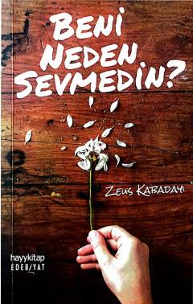

BNJavobsiz sevgi va yurak kechinmalari haqidagi ta'sirli asar.
Ushbu kitob insonning sevgisi, yurak kechinmalari va javobsiz qolgan tuyg'ulari haqida hikoya qiladi. Muallif hayotdagi eng og'riqli savollardan biri bo'lgan "meni nima uchun sevmading" degan savolga javob izlaydi. Asar hissiyoti kuchli va samimiy misralari bilan kitobxonni o'ylantiradi.